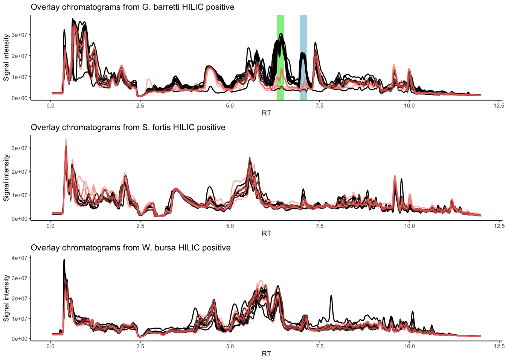

2 Metabolomics
2.1 Experimental methods and detailed description
Additional sampling notes
During the sampling on the Pâmiut cruises, the sponges remained on deck or in the laboratory for approximately 30–45 min before they were frozen to -20°C. The outside temperature usually oscillated around 4–5°C, and the sorting area was approximately 10°C. The sample consisted of both choanosome and coretx.
Laboratory methods and data acquisition
Metabolites were separated in connection to downstream mass spectrometry (HRMS) analysis using two different chromatographic columns (UPLC): a hydrophilic interaction liquid chromatography (HILIC) column that retains polar compounds, and a reversed-phase (RP) column that favours retention of non-polar compounds. All samples were processed in randomized order using glass instruments during the extraction to avoid chemical contamination.
Mass spectrometry analysis
Dried extracts in glass vials were dissolved in 200 µL solvent (HILIC: 50 µL H2O and 175 µL acetonitrile AcN; RP: 140 µL H2O and 10 µL AcN). Upon addition of the organic solvent for HILIC chromatography, all samples separated into two immiscible layers. The vials were centrifuged for 3 min at 2000 x g to yield an even separation. Only the top layer (approximately 150 µL) was transferred to a Chromacol 03-FISV MS-vial (Thermo Scientific, Waltham, Massachusetts, USA) for MS analyses. For RP chromatography, no layers were observed, and the entire volume of the dissolved sample was used. A five µL aliquot from each individual MS-vial for HILIC and RP, respectively, was combined to produce a quality control (QC) sample.
High resolution MS analysis system and settings
The extracts were analyzed back-to-back in positive and negative ionization mode on an Acquity I-Class Ultra Performance Liquid Chromatography UPLC coupled to a G2S Synapt Q-TOF with an electrospray ionization (ESI) ion source (all Waters Corp., Milford, MA, USA).
Chromatographic separation in HILIC mode was performed on an Acquity UPLC BEH Amide column (1.7 µm, 2.1 mm inner diameter × 50 mm, Waters Corp.). Mobile phase A consisted of 95:5 acetonitrile/MQ water with 5 mM ammonium formate and 0.1 % formic acid (FA), and mobile phase B consisted of 40:60 acetonitrile/MQ water with 5 mM ammonium formate and 0.1 % FA. The gradient elution profile was as follows: mobile phase A was decreased non-linearly (slope factor 8, MassLynx) from 100 % A to 100 % B over 14 min, 100 % B was held for 2 min and then decreased back to 100 % A over 1 min. The column was re-equilibrated at 100 % A for 6 min for a total runtime of 23 min.
Chromatographic separation in RP was performed on an Acquity UPLC BEH C18 column (1.7 µ m, 2.1 mm inner diameter × 50 mm, Waters). Mobile phase A consisted of MQ water with 0.1 % FA, and mobile phase B was AcN with 0.1 % FA. The gradient elution profile started at 95 % A, was decreased linearly over 14 min to 5 % A, and 5 % A was held for 2 min before the column was re-equilibrated at 95 % A for 4 min. The flow rate was set to 0.4 mL/min, the column temperature was set to 40°C, the samples were kept at 8°C and the injection volume was 5 µL in all experiments.
Data acquisition
Data acquisition was performed using MSE mode, and lock mass correction was applied using a solution of leucine enkephalin in both positive and negative mode. Ionization parameters were set as follows in positive/negative mode; the capillary voltage was 1kV/1.5 kV, the cone voltage was 30 V/25 V, the source offset was 50/60 and the source temperature was set to 120°C. Nitrogen was used as desolvation and cone gas with gas flows of 800 l/h and 50 l/h, respectively, and desolvation temperature was set to 500°C/450°C. For MSE acquisition a collision energy ramp from 20–45 eV was used with argon as collision gas. The instrument was calibrated in the m/z range 50–1500 using sodium formate prior to each analysis. All study samples were analysed in both RP and HILIC, in positive and negative ionization mode, resulting in four metabolite datasets per sponge specimen. The column and sample cone was cleaned in between each analysis mode. Prior to each analysis ten QC injections were made to condition the column, and to ensure stable retention times and signal intensities. The study samples were analysed in randomized order with QC injections interspaced every 6th injection.
MS data processing
Raw files were converted to netCDF files by Databridge (part of MassLynx, Waters Corporation, Milford, Massachusetts, USA). The netCDF files with the chromatographic spectra were sorted into folders according to species and processed with XCMS in R. Peak picking was performed using the centWave function with parameters ppm=8, peakwidth set to c(5,45) and the noise parameter set to 2000. Retention time alignment was performed with the obiwarp function and the response factor set to 10, grouping was performed with the “group” function and the “fillPeaks” function was used to impute a signal in cases where no matching pseudospectra were detected.
The data set was curated to remove features eluting in the void (retention time less than 45 s). A raw data set as well as two normalized data sets (Log10-transformed and median fold change normalized) were produced and filtered to only retain features with a coefficient of variation < 30% in the QC samples. After subsequent evaluation, raw data sets were used in subsequent statistics and modelling.
An overview of the number of features and PC groups annotated by CAMERA, as well as their exclusion is given in a table at the end of this document.
2.2 Data processing
2.2.1 Peak picking with XCMS and annotation with CAMERA
We processed samples from all three sponnge species in random order with interspersed injection of a combined QC sample to monitor stability of the UPLC-HRMS run. The acquired signals/spectra were converted to netCDF format using the Program DataBridge, and thereafter sorted into four folders, three for the sponge species (Gb, Sf, Wb) and one for the QC samples (QC). Peak picking and combination of pseudospectra is performed with the R package xcms, the subsequent annotation of adducts and isotopes with the R package CAMERA.
2.2.2 HILIC (Hydrophilic interaction chromatography) column with positive ESI (electron spray ionisation)
# HILIC POS ALWAYS CHECK DATE, CHROMATOGRAPHIC CLOUMN (HILIC, RP) AND ESI-MODE
# (naming, CAMERA: pos, neg)
# setwd() # work in directory containing the sorted CDF files. getwd()
library(xcms)
xset <- xcmsSet(method = "centWave", ppm = 8, peakwidth = c(5, 45), noise = 2000)
save(xset, file = "HILIC_pos_xset_20190417.Rda")
# load(file='HILIC_pos_xset_20190417.Rda') #When resuming after a break
xset <- group(xset)
xset2 <- retcor(xset, method = "obiwarp", response = 10, plottype = "deviation")
xset2 <- group(xset2)
xset3 <- fillPeaks(xset2)
save(xset3, file = "HILIC_pos_xset3_20190417.Rda")
reporttab <- diffreport(xset3, "Gb", "Sf", "Gb_Sf_HILIC_pos_20190417", 10)
library(CAMERA)
xsa <- xsAnnotate(xset3)
xsaF <- groupFWHM(xsa, perfwhm = 0.3)
xsaC <- groupCorr(xsaF, cor_eic_th = 0.7)
xsaFI <- findIsotopes(xsaC)
rules <- read.csv("data/rules_jan_pos.csv", header = T, sep = ",")
xsaFA <- findAdducts(xsaFI, polarity = "positive", rules = rules)
# write.csv(getPeaklist(xsaFA), file='HILIC_pos_20190417.csv')The other data experiments, HILIC with negative ESI and RP with positive and negative ESI are processed accordingly.
2.2.3 HILIC Chromatography with negative ESI
# HILIC NEG 20190421
# setwd() # work in directory containing the sorted CDF files. getwd()
library(xcms)
xset <- xcmsSet(method = "centWave", ppm = 8, peakwidth = c(5, 45), noise = 2000)
save(xset, file = "HILIC_neg_xset_20190421.Rda")
# load(file='HILIC_neg_xset_20190421.Rda') #When resuming after a break
xset <- group(xset)
xset2 <- retcor(xset, method = "obiwarp", response = 10, plottype = "deviation")
xset2 <- group(xset2)
xset3 <- fillPeaks(xset2)
save(xset3, file = "HILIC_neg_xset3_20190421.Rda")
reporttab <- diffreport(xset3, "Gb", "Sf", "Gb_Sf_HILIC_neg_20190421", 10)
library(CAMERA)
xsa <- xsAnnotate(xset3)
xsaF <- groupFWHM(xsa, perfwhm = 0.3)
xsaC <- groupCorr(xsaF, cor_eic_th = 0.7)
xsaFI <- findIsotopes(xsaC)
rules <- read.csv("data/rules_jan_neg.csv", header = T, sep = ",")
xsaFA <- findAdducts(xsaFI, polarity = "negative", rules = rules)
# write.csv(getPeaklist(xsaFA), file='HILIC_neg_20190421.csv')2.2.4 RP (Reversed phase) Chromatography with positive ESI
# RP POS 20190421
# setwd() # work in directory containing the sorted CDF files. getwd()
library(xcms)
xset <- xcmsSet(method = "centWave", ppm = 8, peakwidth = c(5, 45), noise = 2000)
save(xset, file = "RP_pos_xset_20190421.Rda")
# load(file='RP_pos_xset_20190421.Rda') #When resuming after a break
xset <- group(xset)
xset2 <- retcor(xset, method = "obiwarp", response = 10, plottype = "deviation")
xset2 <- group(xset2)
xset3 <- fillPeaks(xset2)
save(xset3, file = "RP_pos_xset3_20190421.Rda")
reporttab <- diffreport(xset3, "Gb", "Sf", "Gb_Sf_RP_pos_20190421", 10)
library(CAMERA)
xsa <- xsAnnotate(xset3)
xsaF <- groupFWHM(xsa, perfwhm = 0.3)
xsaC <- groupCorr(xsaF, cor_eic_th = 0.7)
xsaFI <- findIsotopes(xsaC)
rules <- read.csv("data/rules_jan_pos.csv", header = T, sep = ",")
xsaFA <- findAdducts(xsaFI, polarity = "positive", rules = rules)
# write.csv(getPeaklist(xsaFA), file='RP_pos_20190421.csv')2.2.5 RP Chromatography with negative ESI
# RP NEG 20190422
# setwd() # work in directory containing the sorted CDF files. getwd()
library(xcms)
xset <- xcmsSet(method = "centWave", ppm = 8, peakwidth = c(5, 45), noise = 2000)
save(xset, file = "RP_neg_xset_20190422.Rda")
# load(file='RP_neg_xset_20190422.Rda') #When resuming after a break
xset <- group(xset)
xset2 <- retcor(xset, method = "obiwarp", response = 10, plottype = "deviation")
xset2 <- group(xset2)
xset3 <- fillPeaks(xset2)
save(xset3, file = "RP_neg_xset3_20190422.Rda")
reporttab <- diffreport(xset3, "Gb", "Sf", "Gb_Sf_RP_neg_20190422", 10)
library(CAMERA)
xsa <- xsAnnotate(xset3)
xsaF <- groupFWHM(xsa, perfwhm = 0.3)
xsaC <- groupCorr(xsaF, cor_eic_th = 0.7)
xsaFI <- findIsotopes(xsaC)
rules <- read.csv("data/rules_jan_neg.csv", header = T, sep = ",")
xsaFA <- findAdducts(xsaFI, polarity = "negative", rules = rules)
# write.csv(getPeaklist(xsaFA), file='RP_neg_20190422.csv')2.2.6 Filtering of the raw data set
Features with following properties were removed:
- Eluting in the void (RT < 45 s)
- CV>30 % in QC samples
- Adducts as annotated by CAMERA
As the presence of the same parent feature in the the form of isotopes and adducts distorts downstream global metabolome analyses, we generated two versions of curated or selective feature tables. In both, void and unstably measured features are removed (“cleaned”). One retains only the feature with the largest signal per pc group (“cleaned_pcgroup”), the other is more stringent and only contains explicitly annotated parent ions (“cleaned_MH”), i.e. [M+H]+ for positive ESI and [M-H]- for negative ESI acquired data.
library(dplyr)
# ================================ HILIC pos ===================================
raw_peaks <- read.csv("data/HILIC_pos_20190417.csv")
hp_dim1 <- dim(raw_peaks)[1]
hp_pcg1 <- length(unique(raw_peaks$pcgroup))
# Removing features eluting in the void
raw_peaks <- raw_peaks[raw_peaks$rt > 45, ]
hp_dim2 <- dim(raw_peaks)[1]
hp_pcg2 <- length(unique(raw_peaks$pcgroup))
# Removing features with a CV < 30%
f <- which(colnames(raw_peaks) == "IE_20170918_02001") # first QC HILIC pos
l <- which(colnames(raw_peaks) == "IE_20170918_07601") # last QC HILIC pos
raw_peaks["SD"] <- apply(raw_peaks[, f:l], 1, sd)
raw_peaks["MEAN"] <- apply(raw_peaks[, f:l], 1, mean)
raw_peaks["CV"] <- raw_peaks$SD/raw_peaks$MEAN
raw_peaks <- raw_peaks[raw_peaks$CV < 0.3, ]
hp_dim3 <- dim(raw_peaks)[1]
hp_pcg3 <- length(unique(raw_peaks$pcgroup))
# write.csv(raw_peaks, 'HILIC_pos_20190417_cleaned.csv')
# Keep only the feature with the greatest sum of signal per pc group
l <- dim(raw_peaks)[2] - 6
raw_peaks["fss"] <- apply(raw_peaks[, 13:l], 1, sum) #feature signal sum
raw_peaks <- raw_peaks[order(raw_peaks$pcgroup, -raw_peaks$fss), ]
# for every pc group, the first line has the strongest signal. The function
# distinct() [dplyr package] can be used to keep only unique/distinct rows from a
# data frame. If there are duplicate rows, _only the first row_ is preserved.
selected_peaks <- distinct(raw_peaks, raw_peaks$pcgroup, .keep_all = TRUE)
hp_dim4 <- dim(selected_peaks)[1]
hp_pcg4 <- length(unique(selected_peaks$pcgroup))
# write.csv(selected_peaks, 'HILIC_pos_20190417_cleaned_pcgroup.csv')
rm(selected_peaks)
# Keep only features with explicit annotations of [M+H]+
library(stringr)
raw_peaks["[M+H]+"] <- NA
pattern <- "[M+H]+"
raw_peaks["[M+H]+"] <- str_detect(raw_peaks$adduct, paste0("^\\Q", pattern, "\\E"))
selected_peaks <- raw_peaks[raw_peaks$`[M+H]+` == "TRUE", ]
hp_dim5 <- dim(selected_peaks)[1]
hp_pcg5 <- length(unique(selected_peaks$pcgroup))
# write.csv(selected_peaks, 'HILIC_pos_20190417_cleaned_MH.csv')
hilic_pos <- raw_peaks
rm(f, l, raw_peaks, selected_peaks)
# ================================ HILIC neg ===================================
raw_peaks <- read.csv("data/HILIC_neg_20190421.csv")
hn_dim1 <- dim(raw_peaks)[1]
hn_pcg1 <- length(unique(raw_peaks$pcgroup))
# Removing features eluting in the void
raw_peaks <- raw_peaks[raw_peaks$rt > 45, ]
hn_dim2 <- dim(raw_peaks)[1]
hn_pcg2 <- length(unique(raw_peaks$pcgroup))
# Removing features with a CV < 30%
f <- which(colnames(raw_peaks) == "IE_20170919_01301") # first QC HILIC neg
l <- which(colnames(raw_peaks) == "IE_20170919_06901") # last QC HILIC neg
raw_peaks["SD"] <- apply(raw_peaks[, f:l], 1, sd)
raw_peaks["MEAN"] <- apply(raw_peaks[, f:l], 1, mean)
raw_peaks["CV"] <- raw_peaks$SD/raw_peaks$MEAN
raw_peaks <- raw_peaks[raw_peaks$CV < 0.3, ]
hn_dim3 <- dim(raw_peaks)[1]
hn_pcg3 <- length(unique(raw_peaks$pcgroup))
# write.csv(raw_peaks, 'HILIC_neg_20190421_cleaned.csv')
# Keep only the feature with the greatest sum of signal per pc group
l <- dim(raw_peaks)[2] - 6
raw_peaks["fss"] <- apply(raw_peaks[, 13:l], 1, sum) #feature signal sum
raw_peaks <- raw_peaks[order(raw_peaks$pcgroup, -raw_peaks$fss), ]
selected_peaks <- distinct(raw_peaks, raw_peaks$pcgroup, .keep_all = TRUE)
hn_dim4 <- dim(selected_peaks)[1]
hn_pcg4 <- length(unique(selected_peaks$pcgroup))
# write.csv(selected_peaks, 'HILIC_neg_20190421_cleaned_pcgroup.csv')
rm(selected_peaks)
# Keep only features with explicit annotations of [M-H]-
library(stringr)
raw_peaks["[M-H]-"] <- NA
pattern <- "[M-H]-"
raw_peaks["[M-H]-"] <- str_detect(raw_peaks$adduct, paste0("^\\Q", pattern, "\\E"))
selected_peaks <- raw_peaks[raw_peaks$`[M-H]-` == "TRUE", ]
hn_dim5 <- dim(selected_peaks)[1]
hn_pcg5 <- length(unique(selected_peaks$pcgroup))
# write.csv(selected_peaks, 'HILIC_neg_20190421_cleaned_MH.csv')
hilic_neg <- raw_peaks
rm(f, l, raw_peaks)
# ================================== RP pos ====================================
raw_peaks <- read.csv("data/RP_pos_20190421.csv")
rp_dim1 <- dim(raw_peaks)[1]
rp_pcg1 <- length(unique(raw_peaks$pcgroup))
# Removing features eluting in the void
raw_peaks <- raw_peaks[raw_peaks$rt > 45, ]
rp_dim2 <- dim(raw_peaks)[1]
rp_pcg2 <- length(unique(raw_peaks$pcgroup))
# Removing features with a CV < 30%
f <- which(colnames(raw_peaks) == "IE_20171002_01401") # first QC RP neg
l <- which(colnames(raw_peaks) == "IE_20171002_07201") # last QC RP neg
raw_peaks["SD"] <- apply(raw_peaks[, f:l], 1, sd)
raw_peaks["MEAN"] <- apply(raw_peaks[, f:l], 1, mean)
raw_peaks["CV"] <- raw_peaks$SD/raw_peaks$MEAN
raw_peaks <- raw_peaks[raw_peaks$CV < 0.3, ]
rp_dim3 <- dim(raw_peaks)[1]
rp_pcg3 <- length(unique(raw_peaks$pcgroup))
# write.csv(raw_peaks, 'RP_pos_20190421_cleaned.csv')
# Keep only the feature with the greatest sum of signal per pc group
l <- dim(raw_peaks)[2] - 6
raw_peaks["fss"] <- apply(raw_peaks[, 13:l], 1, sum) #feature signal sum
raw_peaks <- raw_peaks[order(raw_peaks$pcgroup, -raw_peaks$fss), ]
selected_peaks <- distinct(raw_peaks, raw_peaks$pcgroup, .keep_all = TRUE)
rp_dim4 <- dim(selected_peaks)[1]
rp_pcg4 <- length(unique(selected_peaks$pcgroup))
# write.csv(selected_peaks, 'RP_pos_20190421_cleaned_pcgroup.csv')
rm(selected_peaks)
# Keep only features with explicit annotations of [M+H]+
library(stringr)
raw_peaks["[M+H]+"] <- NA
pattern <- "[M+H]+"
raw_peaks["[M+H]+"] <- str_detect(raw_peaks$adduct, paste0("^\\Q", pattern, "\\E"))
selected_peaks <- raw_peaks[raw_peaks$`[M+H]+` == "TRUE", ]
rp_dim5 <- dim(selected_peaks)[1]
rp_pcg5 <- length(unique(selected_peaks$pcgroup))
# write.csv(selected_peaks, 'RP_pos_20190421_cleaned_MH.csv')
rp_pos <- raw_peaks
rm(f, l, raw_peaks, selected_peaks)
# ================================== RP neg ====================================
raw_peaks <- read.csv("data/RP_neg_20190422.csv")
rn_dim1 <- dim(raw_peaks)[1]
rn_pcg1 <- length(unique(raw_peaks$pcgroup))
# Removing features eluting in the void
raw_peaks <- raw_peaks[raw_peaks$rt > 45, ]
rn_dim2 <- dim(raw_peaks)[1]
rn_pcg2 <- length(unique(raw_peaks$pcgroup))
# Removing features with a CV < 30%
f <- which(colnames(raw_peaks) == "IE_20171003_01301") # first QC RP neg
l <- which(colnames(raw_peaks) == "IE_20171003_05701") # 3rd last QC RP neg; QC empty after this injection
raw_peaks["SD"] <- apply(raw_peaks[, f:l], 1, sd)
raw_peaks["MEAN"] <- apply(raw_peaks[, f:l], 1, mean)
raw_peaks["CV"] <- raw_peaks$SD/raw_peaks$MEAN
raw_peaks <- raw_peaks[raw_peaks$CV < 0.3, ]
rn_dim3 <- dim(raw_peaks)[1]
rn_pcg3 <- length(unique(raw_peaks$pcgroup))
# write.csv(raw_peaks, 'RP_neg_20190422_cleaned.csv')
# Keep only the feature with the greatest sum of signal per pc group
l <- dim(raw_peaks)[2] - 6
raw_peaks["fss"] <- apply(raw_peaks[, 13:l], 1, sum) #feature signal sum
raw_peaks <- raw_peaks[order(raw_peaks$pcgroup, -raw_peaks$fss), ]
selected_peaks <- distinct(raw_peaks, raw_peaks$pcgroup, .keep_all = TRUE)
rn_dim4 <- dim(selected_peaks)[1]
rn_pcg4 <- length(unique(selected_peaks$pcgroup))
# write.csv(selected_peaks, 'RP_neg_20190422_cleaned_pcgroup.csv')
rm(selected_peaks)
# Keep only features with explicit annotations of [M-H]-
library(stringr)
raw_peaks["[M-H]-"] <- NA
pattern <- "[M-H]-"
raw_peaks["[M-H]-"] <- str_detect(raw_peaks$adduct, paste0("^\\Q", pattern, "\\E"))
selected_peaks <- raw_peaks[raw_peaks$`[M-H]-` == "TRUE", ]
rn_dim5 <- dim(selected_peaks)[1]
rn_pcg5 <- length(unique(selected_peaks$pcgroup))
# write.csv(selected_peaks, 'RP_neg_20190422_cleaned_MH.csv')
hilic_neg <- raw_peaks
rm(f, l, raw_peaks, selected_peaks)2.2.7 Data quality control
To monitor the stability of the signal during the UPLC-HRMS run, we plot the total signal per sample by injection order.
hp <- read.csv("data/HILIC_pos_20190417.csv", header = T, sep = ",")
hn <- read.csv("data/HILIC_neg_20190421.csv", header = T, sep = ",")
rp <- read.csv("data/RP_pos_20190421.csv", header = T, sep = ",")
rn <- read.csv("data/RP_neg_20190422.csv", header = T, sep = ",")
# subsetting, keep only sample data
hp <- hp[, 13:(dim(hp)[2] - 3)] #14
hn <- hn[, 13:(dim(hn)[2] - 3)]
rp <- rp[, 13:(dim(rp)[2] - 3)]
rn <- rn[, 13:(dim(rn)[2] - 3)]
# sum signal of columns, i.e. per sample
hp[nrow(hp) + 1, ] <- apply(hp, 2, sum)
hn[nrow(hn) + 1, ] <- apply(hn, 2, sum)
rp[nrow(rp) + 1, ] <- apply(rp, 2, sum)
rn[nrow(rn) + 1, ] <- apply(rn, 2, sum)
# data frame gymnastics
hp_df <- data.frame(t((hp[dim(hp)[1], ])))
hn_df <- data.frame(t((hn[dim(hn)[1], ])))
rp_df <- data.frame(t((rp[dim(rp)[1], ])))
rn_df <- data.frame(t((rn[dim(rn)[1], ])))
colnames(hp_df) <- c("colsum_hp")
hp_df["id"] <- rownames(hp_df)
colnames(hn_df) <- c("colsum_hn")
hn_df["id"] <- rownames(hn_df)
colnames(rp_df) <- c("colsum_rp")
rp_df["id"] <- rownames(rp_df)
colnames(rn_df) <- c("colsum_rn")
rn_df["id"] <- rownames(rn_df)
library(stringr)
hp_df["hp_io"] <- as.integer(str_sub(hp_df$id, -4, -3))
hn_df["hn_io"] <- as.integer(str_sub(hn_df$id, -4, -3))
rp_df["rp_io"] <- as.integer(str_sub(rp_df$id, -4, -3))
rn_df["rn_io"] <- as.integer(str_sub(rn_df$id, -4, -3))
hp_df <- hp_df[order(hp_df$hp_io), ]
hp_df["n"] <- seq(nrow(hp_df))
hp_df["experiment"] <- "HILIC pos."
hn_df <- hn_df[order(hn_df$hn_io), ]
hn_df["n"] <- seq(nrow(hn_df))
hn_df["experiment"] <- "HILIC neg."
rp_df <- rp_df[order(rp_df$rp_io), ]
rp_df["n"] <- seq(nrow(rp_df))
rp_df["experiment"] <- "RP pos."
rn_df <- rn_df[order(rn_df$rn_io), ]
rn_df["n"] <- seq(nrow(rn_df))
rn_df["experiment"] <- "RP neg."
colnames(hp_df) <- c("colsum", "id", "io", "n", "experiment")
colnames(hn_df) <- c("colsum", "id", "io", "n", "experiment")
colnames(rp_df) <- c("colsum", "id", "io", "n", "experiment")
colnames(rn_df) <- c("colsum", "id", "io", "n", "experiment")
stability <- rbind(hp_df, hn_df, rp_df, rn_df)
library(ggplot2)
ggplot(stability, aes(x = n, y = colsum, color = experiment)) + geom_line(size = 1.5) +
ggtitle("Signal intensity during UPLC-HRMS experiments") + xlab("sample injection order") +
ylab("total signal intensity per sample") + labs(colour = "Experiment") + theme(legend.position = "bottom") +
geom_smooth(method = "lm", size = 0.5) + facet_grid(experiment ~ ., scales = "free")Figure 2.1: Cummulative signal intensity across all samples and chromatographic experiments shows only a minor effect of injection order.
We see that while signal intensity in all experimental data seems fairly stable, the HILIC positive data set has the highest intensity and virtually no changes at all throughout data acquisition. Therefore, we mostly rely on analyses of the HILIC pos data set.
2.2.8 Summary of data processing
Below we outline the number of features removed in every step as shown in the table and corresponding figure. “CV>30%” is the data set subsequently labelled “cleaned”, “repr. feat.” are the PC-group data set and “ion”" are sometimes also labelled “MH”.
initial_f <- c(hp_dim1, hn_dim1, rp_dim1, rn_dim1)
rt_f <- c(hp_dim2, hn_dim2, rp_dim2, rn_dim2)
cv_f <- c(hp_dim3, hn_dim3, rp_dim3, rn_dim3)
representative_f <- c(hp_dim4, hn_dim4, rp_dim4, rn_dim4)
ion_f <- c(hp_dim5, hn_dim5, rp_dim5, rn_dim5)
initial_p <- c(hp_pcg1, hn_pcg1, rp_pcg1, rn_pcg1)
rt_p <- c(hp_pcg2, hn_pcg2, rp_pcg2, rn_pcg2)
cv_p <- c(hp_pcg3, hn_pcg3, rp_pcg3, rn_pcg3)
representative_p <- c(hp_pcg4, hn_pcg4, rp_pcg4, rn_pcg4)
ion_p <- c(hp_pcg5, hn_pcg5, rp_pcg5, rn_pcg5)
df <- cbind(initial_f, rt_f, cv_f, representative_f, ion_f, initial_p, rt_p, cv_p,
representative_p, ion_p)
rownames(df) <- c("HILIC pos", "HILIC neg", "RP pos", "RP neg")
library(kableExtra)
options(kableExtra.html.bsTable = T)
kable(df, col.names = c("initial", "RT >45 s", "CV <30%", "repr. feat.", "ion", "initial",
"RT >45 s", "CV <30%", "repr. feat.", "ion"), longtable = T, booktabs = T, caption = "Number of features and pc groups
remaining after each filtering step.") %>%
add_header_above(c("", features = 5, `pc groups` = 5)) %>% kable_styling(bootstrap_options = c("striped",
"hover", "bordered", "condensed", "responsive"), full_width = F, latex_options = c("striped",
"scale_down"))| initial | RT >45 s | CV <30% | repr. feat. | ion | initial | RT >45 s | CV <30% | repr. feat. | ion | |
|---|---|---|---|---|---|---|---|---|---|---|
| HILIC pos | 5113 | 4389 | 3507 | 2212 | 105 | 3298 | 2781 | 2212 | 2212 | 79 |
| HILIC neg | 4049 | 3081 | 2808 | 1351 | 123 | 2044 | 1495 | 1351 | 1351 | 62 |
| RP pos | 5821 | 5588 | 4673 | 2736 | 171 | 3420 | 3277 | 2736 | 2736 | 128 |
| RP neg | 3867 | 3621 | 3166 | 1678 | 105 | 2069 | 1918 | 1678 | 1678 | 80 |
library(reshape2)
df <- melt(df)
df["filter"] <- c(rep(("initial"), 4), rep(("RT >45 s"), 4), rep(("CV <30%"), 4),
rep(("rep"), 4), rep(("ion"), 4))
df$filter <- factor(df$filter, levels = c("initial", "RT >45 s", "CV <30%", "rep",
"ion"))
df["category"] <- c(rep(("feature"), 20), rep(("pc group"), 20))
df$Var2 <- NULL
colnames(df) <- c("acquisition", "value", "filter", "category")
library(ggplot2)
ggplot(df, aes(fill = filter, x = acquisition, y = value)) + geom_bar(position = "dodge",
stat = "identity") + facet_grid(. ~ category) + xlab("Data acquisition mode") +
ylab("Count") + labs(fill = "Filtering step") + theme_bw() + scale_fill_grey() +
scale_y_continuous(breaks = seq(0, 6000, 1000)) + theme(axis.text.x = element_text(angle = 45,
vjust = 0.5, hjust = 0.5), legend.position = "bottom")Figure 2.2: Effect of different filtering steps on the resulting metabolomes in numbers of features.
After preliminary analyses of metabolomics data, a few outliers were re-identified by P. Cárdenas, and one specimen was removed from the data set as it originated from another species.
2.3 Multivariate analyses
We start by visualising all metabolomes with a PCA and a PERMANOVA to get a first impression of our data.
library(ropls)
library(dplyr)
library(ggplot2)
library(tidyverse)
library(vegan)
# load data
hilic_pos <- read.csv("data/HILIC_pos_20190417_cleaned.csv", header = T, sep = ",")
hilic_neg <- read.csv("data/HILIC_neg_20190421_cleaned.csv", header = T, sep = ",")
rp_pos <- read.csv("data/RP_pos_20190421_cleaned.csv", header = T, sep = ",")
rp_neg <- read.csv("data/RP_neg_20190422_cleaned.csv", header = T, sep = ",")
meta_data <- read.csv("data/Steffen_et_al_metadata_PANGAEA.csv", header = T, sep = ";")
formatting <- function(metabolome, meta_data, r, my_colnames) {
formatted <- metabolome
formatted <- formatted[, 14:(dim(formatted)[2] - r)]
formatted <- data.frame(t(formatted))
formatted["ID"] <- rownames(formatted)
formatted["unified_ID"] <- meta_data$unified_ID[match(formatted$ID, meta_data[[my_colnames]])]
formatted["filter"] <- str_sub(formatted$unified_ID, 1, 2)
formatted <- formatted[!formatted$filter == "QC", ]
formatted <- na.omit(formatted)
# formatted$filter <- NULL
formatted$ID <- NULL
formatted <- formatted[order(formatted$unified_ID), ]
rownames(formatted) <- formatted$unified_ID
return(formatted)
}
hilic_pos <- formatting(hilic_pos, meta_data, 6, "LC.MS.HILIC.positive")
hilic_neg <- formatting(hilic_neg, meta_data, 6, "LC.MS.HILIC.negative")
rp_pos <- formatting(rp_pos, meta_data, 6, "LC.MS.RP.positive")
rp_neg <- formatting(rp_neg, meta_data, 6, "LC.MS.RP.negative")
md <- meta_data[, c("Species", "Depth", "Latitude", "Longitude", "YEAR", "MeanBottomTemp_Cdeg",
"MeanBotSalinity_PSU", "unified_ID")]
# Overview PCA illustrating the metabolomes differ by sponge species
pca_wrapper <- function(metabolome, md, my_title) {
metabolome$unified_ID <- NULL
metabolome$filter <- NULL
metabolome <- prcomp(metabolome, scale = T)
k <- summary(metabolome)[["importance"]]
metabolome_df <- data.frame(metabolome$x) #scores, i.e. principal components of the sponge sample
metabolome_df["unified_ID"] <- as.factor(rownames(metabolome_df))
x1 <- paste("PC1", round(k[2, 1], digits = 3) * 100, "%")
y1 <- paste("PC2", round(k[2, 2], digits = 3) * 100, "%")
metabolome_df <- left_join(metabolome_df[, c("PC1", "PC2", "PC3", "unified_ID")],
md[, c("Species", "Depth", "Latitude", "Longitude", "MeanBottomTemp_Cdeg",
"MeanBotSalinity_PSU", "unified_ID")])
p <- ggplot(metabolome_df, aes(x = PC1, y = PC2)) + geom_point(size = 3, aes(shape = factor(Species))) +
ggtitle(my_title) + xlab(x1) + ylab(y1) + theme(legend.position = "none") #+labs(shape='Species')
return(p)
}
hp_pca <- pca_wrapper(hilic_pos, md, "Hilic pos")
hn_pca <- pca_wrapper(hilic_neg, md, "Hilic neg")
rp_pca <- pca_wrapper(rp_pos, md, "RP pos")
rn_pca <- pca_wrapper(rp_neg, md, "RP pos")
library(gridExtra)
grid.arrange(hp_pca, hn_pca, rp_pca, rn_pca, nrow = 2)
Figure 2.3: PCA of the cleaned data sets. Dots are Gb samples, squares are Wb samples, traingles are Sf samples.
library(vegan)
permanova <- function(metabolome, md) {
metabolome$filter <- NULL
md <- md[md$unified_ID %in% metabolome$unified_ID, ]
metabolome <- metabolome[order(metabolome$unified_ID), ]
md <- md[order(md$unified_ID), ]
metabolome$unified_ID <- NULL
m <- adonis(metabolome ~ Species, md)
return(m)
}
permanova(hilic_pos, md)##
## Call:
## adonis(formula = metabolome ~ Species, data = md)
##
## Permutation: free
## Number of permutations: 999
##
## Terms added sequentially (first to last)
##
## Df SumsOfSqs MeanSqs F.Model R2 Pr(>F)
## Species 2 5.6422 2.82112 34.302 0.62026 0.001 ***
## Residuals 42 3.4543 0.08224 0.37974
## Total 44 9.0965 1.00000
## ---
## Signif. codes: 0 '***' 0.001 '**' 0.01 '*' 0.05 '.' 0.1 ' ' 1##
## Call:
## adonis(formula = metabolome ~ Species, data = md)
##
## Permutation: free
## Number of permutations: 999
##
## Terms added sequentially (first to last)
##
## Df SumsOfSqs MeanSqs F.Model R2 Pr(>F)
## Species 2 2.0768 1.03838 26.046 0.55363 0.001 ***
## Residuals 42 1.6744 0.03987 0.44637
## Total 44 3.7512 1.00000
## ---
## Signif. codes: 0 '***' 0.001 '**' 0.01 '*' 0.05 '.' 0.1 ' ' 1##
## Call:
## adonis(formula = metabolome ~ Species, data = md)
##
## Permutation: free
## Number of permutations: 999
##
## Terms added sequentially (first to last)
##
## Df SumsOfSqs MeanSqs F.Model R2 Pr(>F)
## Species 2 6.0969 3.04847 35.972 0.6314 0.001 ***
## Residuals 42 3.5593 0.08475 0.3686
## Total 44 9.6563 1.0000
## ---
## Signif. codes: 0 '***' 0.001 '**' 0.01 '*' 0.05 '.' 0.1 ' ' 1##
## Call:
## adonis(formula = metabolome ~ Species, data = md)
##
## Permutation: free
## Number of permutations: 999
##
## Terms added sequentially (first to last)
##
## Df SumsOfSqs MeanSqs F.Model R2 Pr(>F)
## Species 2 6.4179 3.2089 36.013 0.63725 0.001 ***
## Residuals 41 3.6533 0.0891 0.36275
## Total 43 10.0712 1.00000
## ---
## Signif. codes: 0 '***' 0.001 '**' 0.01 '*' 0.05 '.' 0.1 ' ' 1From the PCA and the PERMANOVA (function adonis, Pr(>F) is the p-value), we gather that the metabolomes regardless of how they were acquired are significatly different in the three sponge species. Therefore, we separate the metabolomes for investigating the effect of depth on them individually.
In order to investigate whether depth has an effect on the species-specific metabolomes, we use OPLS orthogonal projections of latent structures as multivariate analysis approach. This method allows to separate variations in the data based on e.g. depth and orthogonal, i.e. unrelated variation.
# splitting df and adapting meta data
spl_ada <- function(metabolome, md) {
metabolome_gb <- metabolome[metabolome$filter == "Gb", ]
metabolome_sf <- metabolome[metabolome$filter == "Sf", ]
metabolome_wb <- metabolome[metabolome$filter == "Wb", ]
md_gb <- md[md$unified_ID %in% metabolome_gb$unified_ID, ]
md_sf <- md[md$unified_ID %in% metabolome_sf$unified_ID, ]
md_wb <- md[md$unified_ID %in% metabolome_wb$unified_ID, ]
metabolome_gb <- metabolome_gb[order(metabolome_gb$unified_ID), ]
metabolome_sf <- metabolome_sf[order(metabolome_sf$unified_ID), ]
metabolome_wb <- metabolome_wb[order(metabolome_wb$unified_ID), ]
metabolome_gb$filter <- NULL
metabolome_gb$unified_ID <- NULL
metabolome_sf$filter <- NULL
metabolome_sf$unified_ID <- NULL
metabolome_wb$filter <- NULL
metabolome_wb$unified_ID <- NULL
md_gb <- md_gb[order(md_gb$unified_ID), ]
md_sf <- md_sf[order(md_sf$unified_ID), ]
md_wb <- md_wb[order(md_wb$unified_ID), ]
mva_data <- list(metabolome_gb = metabolome_gb, metabolome_sf = metabolome_sf,
metabolome_wb = metabolome_wb, md_gb = md_gb, md_sf = md_sf, md_wb = md_wb)
return(mva_data)
}
hp_opls_df <- spl_ada(hilic_pos, md)
hn_opls_df <- spl_ada(hilic_neg, md)
rp_opls_df <- spl_ada(rp_pos, md)
rn_opls_df <- spl_ada(rp_neg, md)
# P should be NA; or 1
ropls_wrapper <- function(opls_df, p1, p2, p3) {
# ropls' PCA
gb.pca <- opls(opls_df$metabolome_gb, plotL = F, printL = F)
sf.pca <- opls(opls_df$metabolome_sf, plotL = F, printL = F)
wb.pca <- opls(opls_df$metabolome_wb, plotL = F, printL = F)
md_gb <- opls_df$md_gb
md_sf <- opls_df$md_sf
md_wb <- opls_df$md_wb
# ropls' OPLS
gb.opls <- opls(opls_df$metabolome_gb, md_gb[, "Depth"], permI = 1000, orthoI = p1,
scaleC = "pareto", plotL = F)
sf.opls <- opls(opls_df$metabolome_sf, md_sf[, "Depth"], permI = 1000, orthoI = p2,
scaleC = "pareto", plotL = F)
wb.opls <- opls(opls_df$metabolome_wb, md_wb[, "Depth"], permI = 1000, orthoI = p3,
scaleC = "pareto", plotL = F)
# summary
gb.opls <- gb.opls@summaryDF
sf.opls <- sf.opls@summaryDF
wb.opls <- wb.opls@summaryDF
opls_diagnostics <- rbind(gb.opls, sf.opls, wb.opls)
opls_diagnostics["Species"] <- c("Geodia barretti", "Stryphnus fortis", "Weberella bursa")
return(opls_diagnostics)
}
a <- Sys.time()
hp_cleaned_opls <- ropls_wrapper(hp_opls_df, NA, 1, NA)
hn_cleaned_opls <- ropls_wrapper(hn_opls_df, NA, 1, NA)
rp_cleaned_opls <- ropls_wrapper(rp_opls_df, NA, 1, NA)
rn_cleaned_opls <- ropls_wrapper(rn_opls_df, 1, 1, NA)
b <- Sys.time()
b - a
cleaned <- rbind(hp_cleaned_opls, hn_cleaned_opls, rp_cleaned_opls, rn_cleaned_opls)
cleaned["Experiment"] <- c(rep("HILIC pos", 3), rep("HILIC neg", 3), rep("RP pos",
3), rep("RP neg", 3))
write.csv(cleaned, "data/cleaned_opls_diagnostics.csv", row.names = F)
Figure 2.4: Example output for OPLS models generated with ROPLS. This is HILIC positive cleaned data set for G. barretti.
In the same manner, we can analyse the two remaining sets produced by different filtering options.
# load data ION
hilic_pos <- read.csv("data/HILIC_pos_20190417_cleaned_MH.csv", header = T, sep = ",")
hilic_neg <- read.csv("data/HILIC_neg_20190421_cleaned_MH.csv", header = T, sep = ",")
rp_pos <- read.csv("data/RP_pos_20190421_cleaned_MH.csv", header = T, sep = ",")
rp_neg <- read.csv("data/RP_neg_20190422_cleaned_MH.csv", header = T, sep = ",")
meta_data <- read.csv("data/Steffen_et_al_metadata_PANGAEA.csv", header = T, sep = ";")
hilic_pos <- formatting(hilic_pos, meta_data, 8, "LC.MS.HILIC.positive")
hilic_neg <- formatting(hilic_neg, meta_data, 8, "LC.MS.HILIC.negative")
rp_pos <- formatting(rp_pos, meta_data, 8, "LC.MS.RP.positive")
rp_neg <- formatting(rp_neg, meta_data, 8, "LC.MS.RP.negative")
md <- meta_data[, c("Species", "Depth", "Latitude", "Longitude", "YEAR", "MeanBottomTemp_Cdeg",
"MeanBotSalinity_PSU", "unified_ID")]
hp_pca <- pca_wrapper(hilic_pos, md, "Hilic pos")
hn_pca <- pca_wrapper(hilic_neg, md, "Hilic neg")
rp_pca <- pca_wrapper(rp_pos, md, "RP pos")
rn_pca <- pca_wrapper(rp_neg, md, "RP pos")
grid.arrange(hp_pca, hn_pca, rp_pca, rn_pca, nrow = 2)
Figure 2.5: PCA of the metabolome data set filtered to retain only annotated ions. Dots are Gb samples, squares are Wb samples, traingles are Sf samples.
##
## Call:
## adonis(formula = metabolome ~ Species, data = md)
##
## Permutation: free
## Number of permutations: 999
##
## Terms added sequentially (first to last)
##
## Df SumsOfSqs MeanSqs F.Model R2 Pr(>F)
## Species 2 7.9121 3.9560 48.131 0.69623 0.001 ***
## Residuals 42 3.4521 0.0822 0.30377
## Total 44 11.3642 1.00000
## ---
## Signif. codes: 0 '***' 0.001 '**' 0.01 '*' 0.05 '.' 0.1 ' ' 1##
## Call:
## adonis(formula = metabolome ~ Species, data = md)
##
## Permutation: free
## Number of permutations: 999
##
## Terms added sequentially (first to last)
##
## Df SumsOfSqs MeanSqs F.Model R2 Pr(>F)
## Species 2 1.23799 0.61899 31.471 0.59978 0.001 ***
## Residuals 42 0.82609 0.01967 0.40022
## Total 44 2.06408 1.00000
## ---
## Signif. codes: 0 '***' 0.001 '**' 0.01 '*' 0.05 '.' 0.1 ' ' 1##
## Call:
## adonis(formula = metabolome ~ Species, data = md)
##
## Permutation: free
## Number of permutations: 999
##
## Terms added sequentially (first to last)
##
## Df SumsOfSqs MeanSqs F.Model R2 Pr(>F)
## Species 2 8.9172 4.4586 52.824 0.71554 0.001 ***
## Residuals 42 3.5450 0.0844 0.28446
## Total 44 12.4621 1.00000
## ---
## Signif. codes: 0 '***' 0.001 '**' 0.01 '*' 0.05 '.' 0.1 ' ' 1##
## Call:
## adonis(formula = metabolome ~ Species, data = md)
##
## Permutation: free
## Number of permutations: 999
##
## Terms added sequentially (first to last)
##
## Df SumsOfSqs MeanSqs F.Model R2 Pr(>F)
## Species 2 7.4863 3.7432 33.508 0.62043 0.001 ***
## Residuals 41 4.5801 0.1117 0.37957
## Total 43 12.0665 1.00000
## ---
## Signif. codes: 0 '***' 0.001 '**' 0.01 '*' 0.05 '.' 0.1 ' ' 1hp_opls_df <- spl_ada(hilic_pos, md)
hn_opls_df <- spl_ada(hilic_neg, md)
rp_opls_df <- spl_ada(rp_pos, md)
rn_opls_df <- spl_ada(rp_neg, md)
a <- Sys.time()
hp_cleaned_opls <- ropls_wrapper(hp_opls_df, NA, 1, NA)
hn_cleaned_opls <- ropls_wrapper(hn_opls_df, NA, NA, NA)
rp_cleaned_opls <- ropls_wrapper(rp_opls_df, NA, 1, NA)
rn_cleaned_opls <- ropls_wrapper(rn_opls_df, 1, 1, NA)
b <- Sys.time()
b - a
ion <- rbind(hp_cleaned_opls, hn_cleaned_opls, rp_cleaned_opls, rn_cleaned_opls)
ion["Experiment"] <- c(rep("HILIC pos", 3), rep("HILIC neg", 3), rep("RP pos", 3),
rep("RP neg", 3))
write.csv(ion, "data/cleaned_MH_opls_diagnostics.csv", row.names = F)# load data PC_GROUP
hilic_pos <- read.csv("data/HILIC_pos_20190417_cleaned_pcgroup.csv", header = T,
sep = ",")
hilic_neg <- read.csv("data/HILIC_neg_20190421_cleaned_pcgroup.csv", header = T,
sep = ",")
rp_pos <- read.csv("data/RP_pos_20190421_cleaned_pcgroup.csv", header = T, sep = ",")
rp_neg <- read.csv("data/RP_neg_20190422_cleaned_pcgroup.csv", header = T, sep = ",")
meta_data <- read.csv("data/Steffen_et_al_metadata_PANGAEA.csv", header = T, sep = ";")
hilic_pos <- formatting(hilic_pos, meta_data, 8, "LC.MS.HILIC.positive")
hilic_neg <- formatting(hilic_neg, meta_data, 8, "LC.MS.HILIC.negative")
rp_pos <- formatting(rp_pos, meta_data, 8, "LC.MS.RP.positive")
rp_neg <- formatting(rp_neg, meta_data, 8, "LC.MS.RP.negative")
md <- meta_data[, c("Species", "Depth", "Latitude", "Longitude", "YEAR", "MeanBottomTemp_Cdeg",
"MeanBotSalinity_PSU", "unified_ID")]
hp_pca <- pca_wrapper(hilic_pos, md, "Hilic pos")
hn_pca <- pca_wrapper(hilic_neg, md, "Hilic neg")
rp_pca <- pca_wrapper(rp_pos, md, "RP pos")
rn_pca <- pca_wrapper(rp_neg, md, "RP pos")
grid.arrange(hp_pca, hn_pca, rp_pca, rn_pca, nrow = 2)
Figure 2.6: PCA of the metabolome data set filtered to retain the feature with the strongest signal per PC group. Dots are Gb samples, squares are Wb samples, traingles are Sf samples.
##
## Call:
## adonis(formula = metabolome ~ Species, data = md)
##
## Permutation: free
## Number of permutations: 999
##
## Terms added sequentially (first to last)
##
## Df SumsOfSqs MeanSqs F.Model R2 Pr(>F)
## Species 2 6.0660 3.03302 33.376 0.6138 0.001 ***
## Residuals 42 3.8167 0.09087 0.3862
## Total 44 9.8828 1.0000
## ---
## Signif. codes: 0 '***' 0.001 '**' 0.01 '*' 0.05 '.' 0.1 ' ' 1##
## Call:
## adonis(formula = metabolome ~ Species, data = md)
##
## Permutation: free
## Number of permutations: 999
##
## Terms added sequentially (first to last)
##
## Df SumsOfSqs MeanSqs F.Model R2 Pr(>F)
## Species 2 5.1323 2.56616 32.819 0.6098 0.001 ***
## Residuals 42 3.2840 0.07819 0.3902
## Total 44 8.4163 1.0000
## ---
## Signif. codes: 0 '***' 0.001 '**' 0.01 '*' 0.05 '.' 0.1 ' ' 1##
## Call:
## adonis(formula = metabolome ~ Species, data = md)
##
## Permutation: free
## Number of permutations: 999
##
## Terms added sequentially (first to last)
##
## Df SumsOfSqs MeanSqs F.Model R2 Pr(>F)
## Species 2 5.7191 2.85957 35.582 0.62886 0.001 ***
## Residuals 42 3.3754 0.08037 0.37114
## Total 44 9.0945 1.00000
## ---
## Signif. codes: 0 '***' 0.001 '**' 0.01 '*' 0.05 '.' 0.1 ' ' 1##
## Call:
## adonis(formula = metabolome ~ Species, data = md)
##
## Permutation: free
## Number of permutations: 999
##
## Terms added sequentially (first to last)
##
## Df SumsOfSqs MeanSqs F.Model R2 Pr(>F)
## Species 2 6.8700 3.4350 33.333 0.61919 0.001 ***
## Residuals 41 4.2251 0.1031 0.38081
## Total 43 11.0952 1.00000
## ---
## Signif. codes: 0 '***' 0.001 '**' 0.01 '*' 0.05 '.' 0.1 ' ' 1hp_opls_df <- spl_ada(hilic_pos, md)
hn_opls_df <- spl_ada(hilic_neg, md)
rp_opls_df <- spl_ada(rp_pos, md)
rn_opls_df <- spl_ada(rp_neg, md)
a <- Sys.time()
hp_cleaned_opls <- ropls_wrapper(hp_opls_df, NA, NA, NA)
hn_cleaned_opls <- ropls_wrapper(hn_opls_df, NA, NA, NA)
rp_cleaned_opls <- ropls_wrapper(rp_opls_df, NA, NA, NA)
rn_cleaned_opls <- ropls_wrapper(rn_opls_df, NA, NA, NA)
b <- Sys.time()
b - a
pcg <- rbind(hp_cleaned_opls, hn_cleaned_opls, rp_cleaned_opls, rn_cleaned_opls)
pcg["Experiment"] <- c(rep("HILIC pos", 3), rep("HILIC neg", 3), rep("RP pos", 3),
rep("RP neg", 3))
write.csv(pcg, "data/cleaned_PC_opls_diagnostics.csv", row.names = F)In some cases, an OPLS model was not appropriate. Typically, the model chooses the number of orthogonal components by itself (orthI=NA) and when the first component is not significant, the model building will stop. However, one can force any number of orthogonal components and run the OPLS model anyway. You can spot those cases when the NA was set to 1 in the ropls_wrapper function
The multivariate analyses (OPLS) were quite time consuming, requiring 1.4 hours for the “cleaned” data sets, 46.3 min for the “PC-group” data stes and 4 min for the “ion” data sets on my system. Therefore, the combined model diagnostics are summarised in Tab 2.2.
library(kableExtra)
cleaned <- read.csv("data/cleaned_opls_diagnostics.csv", header = T)
pcgrp <- read.csv("data/cleaned_PC_opls_diagnostics.csv", header = T)
ion <- read.csv("data/cleaned_MH_opls_diagnostics.csv", header = T)
opls_diagnostics <- rbind(cleaned, pcgrp, ion)
opls_diagnostics["filtering"] <- c(rep("cleaned", 12), rep("pc group", 12), rep("ion",
12))
options(kableExtra.html.bsTable = T)
kable(opls_diagnostics, col.names = c("R2X cum", "R2Y cum", "Q2 cum", "RMSEE", "pre",
"ort", "pR2Y", "pQ2", "Species", "Experiment", "data set"), longtable = T, booktabs = T,
caption = "Model diagnostics of the metabolome variations modelled by depth",
row.names = FALSE) %>% add_header_above(c(Diagnostics = 8, `Data set attribution` = 3)) %>%
kable_styling(bootstrap_options = c("striped", "hover", "bordered", "condensed",
"responsive"), font_size = 12, full_width = F, latex_options = c("striped",
"scale_down"))| R2X cum | R2Y cum | Q2 cum | RMSEE | pre | ort | pR2Y | pQ2 | Species | Experiment | data set |
|---|---|---|---|---|---|---|---|---|---|---|
| 0.425 | 0.998 | 0.8670 | 19.7 | 1 | 2 | 0.001 | 0.001 | Geodia barretti | HILIC pos | cleaned |
| 0.257 | 0.988 | 0.6530 | 42.0 | 1 | 1 | 0.067 | 0.002 | Stryphnus fortis | HILIC pos | cleaned |
| 0.496 | 0.999 | 0.5490 | 13.7 | 1 | 3 | 0.002 | 0.028 | Weberella bursa | HILIC pos | cleaned |
| 0.464 | 0.988 | 0.7670 | 47.4 | 1 | 2 | 0.010 | 0.001 | Geodia barretti | HILIC neg | cleaned |
| 0.436 | 0.924 | 0.6290 | 106.0 | 1 | 1 | 0.074 | 0.002 | Stryphnus fortis | HILIC neg | cleaned |
| 0.366 | 0.985 | 0.5560 | 42.4 | 1 | 2 | 0.233 | 0.013 | Weberella bursa | HILIC neg | cleaned |
| 0.585 | 0.998 | 0.7960 | 22.6 | 1 | 3 | 0.003 | 0.001 | Geodia barretti | RP pos | cleaned |
| 0.328 | 0.965 | 0.5680 | 71.5 | 1 | 1 | 0.039 | 0.010 | Stryphnus fortis | RP pos | cleaned |
| 0.343 | 0.980 | 0.3350 | 48.8 | 1 | 2 | 0.113 | 0.108 | Weberella bursa | RP pos | cleaned |
| 0.304 | 0.937 | 0.6140 | 99.8 | 1 | 1 | 0.040 | 0.003 | Geodia barretti | RP neg | cleaned |
| 0.390 | 0.924 | 0.5060 | 106.0 | 1 | 1 | 0.089 | 0.015 | Stryphnus fortis | RP neg | cleaned |
| 0.412 | 0.985 | 0.4500 | 41.9 | 1 | 2 | 0.029 | 0.027 | Weberella bursa | RP neg | cleaned |
| 0.429 | 0.997 | 0.8660 | 23.7 | 1 | 2 | 0.003 | 0.001 | Geodia barretti | HILIC pos | pc group |
| 0.362 | 0.998 | 0.7020 | 19.9 | 1 | 2 | 0.049 | 0.004 | Stryphnus fortis | HILIC pos | pc group |
| 0.542 | 0.995 | 0.5820 | 25.9 | 1 | 3 | 0.114 | 0.015 | Weberella bursa | HILIC pos | pc group |
| 0.499 | 0.990 | 0.7500 | 43.2 | 1 | 2 | 0.004 | 0.002 | Geodia barretti | HILIC neg | pc group |
| 0.433 | 0.990 | 0.7230 | 40.9 | 1 | 2 | 0.068 | 0.002 | Stryphnus fortis | HILIC neg | pc group |
| 0.390 | 0.986 | 0.6000 | 39.8 | 1 | 2 | 0.132 | 0.005 | Weberella bursa | HILIC neg | pc group |
| 0.602 | 0.996 | 0.8090 | 28.9 | 1 | 3 | 0.014 | 0.001 | Geodia barretti | RP pos | pc group |
| 0.464 | 0.990 | 0.5850 | 40.9 | 1 | 2 | 0.122 | 0.017 | Stryphnus fortis | RP pos | pc group |
| 0.393 | 0.979 | 0.3590 | 49.8 | 1 | 2 | 0.045 | 0.115 | Weberella bursa | RP pos | pc group |
| 0.373 | 0.979 | 0.6850 | 59.9 | 1 | 2 | 0.137 | 0.002 | Geodia barretti | RP neg | pc group |
| 0.637 | 0.991 | 0.6140 | 39.9 | 1 | 3 | 0.455 | 0.035 | Stryphnus fortis | RP neg | pc group |
| 0.440 | 0.980 | 0.4170 | 48.6 | 1 | 2 | 0.089 | 0.049 | Weberella bursa | RP neg | pc group |
| 0.761 | 0.995 | 0.6610 | 34.2 | 1 | 5 | 0.072 | 0.018 | Geodia barretti | HILIC pos | ion |
| 0.294 | 0.915 | 0.3540 | 112.0 | 1 | 1 | 0.226 | 0.109 | Stryphnus fortis | HILIC pos | ion |
| 0.694 | 0.988 | 0.6570 | 40.2 | 1 | 4 | 0.032 | 0.019 | Weberella bursa | HILIC pos | ion |
| 0.401 | 0.942 | 0.6580 | 105.0 | 1 | 2 | 0.013 | 0.002 | Geodia barretti | HILIC neg | ion |
| 0.815 | 0.992 | 0.7570 | 39.5 | 1 | 3 | 0.007 | 0.008 | Stryphnus fortis | HILIC neg | ion |
| 0.556 | 0.949 | 0.6530 | 77.3 | 1 | 2 | 0.005 | 0.004 | Weberella bursa | HILIC neg | ion |
| 0.778 | 0.910 | 0.7940 | 126.0 | 1 | 1 | 0.001 | 0.001 | Geodia barretti | RP pos | ion |
| 0.368 | 0.874 | 0.2560 | 137.0 | 1 | 1 | 0.026 | 0.159 | Stryphnus fortis | RP pos | ion |
| 0.479 | 0.960 | 0.4060 | 68.1 | 1 | 2 | 0.005 | 0.032 | Weberella bursa | RP pos | ion |
| 0.430 | 0.624 | 0.0345 | 244.0 | 1 | 1 | 0.268 | 0.198 | Geodia barretti | RP neg | ion |
| 0.821 | 0.392 | 0.0936 | 300.0 | 1 | 1 | 0.585 | 0.190 | Stryphnus fortis | RP neg | ion |
| 0.804 | 0.973 | 0.5850 | 61.8 | 1 | 4 | 0.065 | 0.027 | Weberella bursa | RP neg | ion |
opls_diagnostics$Species <- as.character(opls_diagnostics$Species)
opls_diagnostics$Species[opls_diagnostics$Species == "Geodia barretti"] <- c("G. barretti")
opls_diagnostics$Species[opls_diagnostics$Species == "Stryphnus fortis"] <- c("S. fortis")
opls_diagnostics$Species[opls_diagnostics$Species == "Weberella bursa"] <- c("W. bursa")
k <- ggplot(opls_diagnostics, aes(x = R2X.cum., y = Q2.cum.)) + geom_point(aes(col = Species,
shape = Experiment)) + theme_bw() + theme(legend.position = "bottom") + xlab("R2") +
ylab("Q2") + guides(col = guide_legend(title = ""), shape = guide_legend(title = ""))
library(ggExtra)
ggMarginal(k, groupColour = TRUE, groupFill = TRUE)Figure 2.7: Model performance visualised. The larger R2 and Q2, the better the model fits with our data.
??? add at least one picture of an opls
2.4 VIPS
From the multivariate model (OPLS) you can derive a vaiable importance in projection (VIF) score for every feature in this model. This is a approximation (but not a statistics test!) of features that support the model. A feature with a VIP score \(\geq\) 1 is considered important and the higher the score, the greater the contribution to the model.
??? add some code and a table. Or add to previous chunks and RUN OVER NIGHT.
2.5 Manual annotation, identification and extraction of metabolic feature signals
A manually curated data set of signal intensities was produced for analysis of identified known and novel compounds.
library(ggplot2)
library(ggrepel)
library(reshape)
library(tidyverse)
library(forcats)
cmp <- read.csv("data/metabolite_master_20190605.csv", header = T, sep = ",")
meta_data <- read.csv("data/Steffen_et_al_metadata_PANGAEA.csv", header = T, sep = ";")
md <- md[c("Depth", "unified_ID")]
# FUN prep: remove, QC samples format depth and IDs
prep <- function(metabolites, md) {
metabolites$X <- NULL
metabolites["spec"] <- str_sub(metabolites$unified_ID, 1, 2)
metabolites <- metabolites[!metabolites$spec == "QC", ]
metabolites <- left_join(metabolites, md)
metabolites <- metabolites[-c(9), ] #removes Gb16 (Geodia atlantica)
metabolites$Depth <- as.numeric(metabolites$Depth)
metabolites <- metabolites[with(metabolites, order(metabolites$spec, metabolites$Depth)),
]
metabolites[] <- lapply(metabolites, function(x) if (is.factor(x))
factor(x) else x)
metabolites$unified_ID <- factor(metabolites$unified_ID, levels = metabolites$unified_ID)
return(metabolites)
}
metabolites <- prep(cmp, md)library(reshape2)
mets <- metabolites[, c("asb", "his", "cre", "pch", "crn", "acl", "ser", "mbc", "chol_s",
"bet", "choline", "ura", "unified_ID", "spec", "Depth")]
colnames(mets) <- c("arseno- betaine", "histamine", "creatine", "phospho- choline",
"carnitine", "acetyl- choline", "serotonin", "2-methyl- butyroyl- carnitine",
"choline sulfate", "betaine", "choline", "uranidine", "unified_ID", "spec", "Depth")
mets <- melt(mets, id.vars = c("spec", "Depth", "unified_ID"))
mets["Species"] <- NA
mets$Species[mets$spec == "Gb"] <- c("Geodia barretti")
mets$Species[mets$spec == "Sf"] <- c("Stryphnus fortis")
mets$Species[mets$spec == "Wb"] <- c("Weberella bursa")
# labeller needs formula interface
all <- ggplot(mets, aes(x = Depth, y = value)) + geom_point() + facet_grid(variable ~
Species, labeller = labeller(variable = label_wrap_gen(10, multi_line = TRUE)),
scales = "free")
all <- all + ggtitle("VIPs") + ylab("signal") + xlab("Depth") + theme_bw() + theme(strip.text.x = element_text(face = "italic"),
panel.background = element_rect(fill = "white", colour = "black"), panel.border = element_rect(colour = "black",
fill = NA), axis.text.x = element_text(angle = 90, hjust = 1)) + scale_y_continuous(labels = scales::scientific) +
scale_x_continuous(breaks = scales::pretty_breaks(n = 12))
all2.6 Chromatorgrams
In G. barretti barettin and 8,9-dihydrobarettin are major compounds with distinct peaks in the chromatogram. We wanted to see whether S. fortis and W. bursa also had major compounds and whether differences in sample depth would be directly reflected in the chromatograms.
gb_chrom <- read.csv("data/Gb_all_chromatograms.csv", header = T, sep = ";")
# differences in RT negligible/insignificant between the different
# chromatograms/samples
gb_chrom[, c("Gb10_RT", "Gb12_RT", "Gb13_RT", "Gb14_RT", "Gb15_RT", "Gb16_RT", "Gb17_RT",
"Gb18_RT", "Gb19_RT", "Gb2_RT", "Gb20_RT", "Gb21_RT", "Gb3_RT", "Gb7_RT", "Gb8_RT",
"Gb9_RT")] <- list(NULL)
colnames(gb_chrom)[colnames(gb_chrom) == "Gb1_RT"] <- "RT"
gb_chrom <- gb_chrom[gb_chrom$RT <= 12, ] # removing tail w/o any signal, run ended at 12 min
# ugly but works
p_gb_chrom <- ggplot(gb_chrom, aes(x = RT, y = Gb1)) + geom_line() + theme_classic() +
geom_rect(data = NULL, aes(xmin = 6.3, xmax = 6.5, ymin = -Inf, ymax = Inf),
fill = "lightgreen", alpha = 0.5) + geom_rect(data = NULL, aes(xmin = 6.95,
xmax = 7.15, ymin = -Inf, ymax = Inf), fill = "lightblue", alpha = 0.5) + geom_line(aes(x = RT,
y = Gb2)) + geom_line(aes(x = RT, y = Gb3)) + geom_line(aes(x = RT, y = Gb7)) +
geom_line(aes(x = RT, y = Gb8)) + geom_line(aes(x = RT, y = Gb9)) + geom_line(aes(x = RT,
y = Gb10)) + geom_line(aes(x = RT, y = Gb15)) + geom_line(aes(x = RT, y = Gb16)) +
geom_line(aes(x = RT, y = Gb17)) + geom_line(aes(x = RT, y = Gb19)) + geom_line(aes(x = RT,
y = Gb21)) + geom_line(aes(x = RT, y = Gb12, color = "red", alpha = 0.5)) + geom_line(aes(x = RT,
y = Gb13, color = "red", alpha = 0.5)) + geom_line(aes(x = RT, y = Gb14, color = "red",
alpha = 0.5)) + geom_line(aes(x = RT, y = Gb18, color = "red", alpha = 0.5)) +
geom_line(aes(x = RT, y = Gb20, color = "red", alpha = 0.5)) + xlab("RT") + ylab("Signal intensity") +
ggtitle("Overlay chromatograms from G. barretti HILIC positive") + theme(legend.position = "none")
sf_chrom <- read.csv("data/Sf_all_chromatograms.csv", header = T, sep = ";")
sf_chrom[, c("Sf10_RT", "Sf11_RT", "Sf12_RT", "Sf13_RT", "Sf14_RT", "Sf15_RT", "Sf2_RT",
"Sf3_RT", "Sf4_RT", "Sf5_RT", "Sf6_RT", "Sf7_RT")] <- list(NULL)
colnames(sf_chrom)[colnames(sf_chrom) == "Sf1_RT"] <- "RT"
sf_chrom <- sf_chrom[sf_chrom$RT <= 12, ]
p_sf_chrom <- ggplot(sf_chrom, aes(x = RT, y = Sf1)) + geom_line() + geom_line(aes(x = RT,
y = Sf2)) + geom_line(aes(x = RT, y = Sf3)) + geom_line(aes(x = RT, y = Sf4)) +
geom_line(aes(x = RT, y = Sf5)) + geom_line(aes(x = RT, y = Sf6)) + geom_line(aes(x = RT,
y = Sf7)) + geom_line(aes(x = RT, y = Sf10, color = "red", alpha = 0.5)) + geom_line(aes(x = RT,
y = Sf11, color = "red", alpha = 0.5)) + geom_line(aes(x = RT, y = Sf12, color = "red",
alpha = 0.5)) + geom_line(aes(x = RT, y = Sf13, color = "red", alpha = 0.5)) +
geom_line(aes(x = RT, y = Sf14, color = "red", alpha = 0.5)) + geom_line(aes(x = RT,
y = Sf15, color = "red", alpha = 0.5)) + xlab("RT") + ylab("Signal intensity") +
ggtitle("Overlay chromatograms from S. fortis HILIC positive") + theme_classic() +
theme(legend.position = "none")
wb_chrom <- read.csv("data/Wb_all_chromatograms.csv", header = T, sep = ";")
wb_chrom[, c("Wb10_RT", "Wb11_RT", "Wb12_RT", "Wb13_RT", "Wb14_RT", "Wb15_RT", "Wb16_RT",
"Wb17_RT", "Wb2_RT", "Wb3_RT", "Wb4_RT", "Wb5_RT", "Wb6_RT", "Wb7_RT", "Wb8_RT")] <- list(NULL)
colnames(wb_chrom)[colnames(wb_chrom) == "Wb1_RT"] <- "RT"
wb_chrom <- wb_chrom[wb_chrom$RT <= 12, ]
p_wb_chrom <- ggplot(wb_chrom, aes(x = RT, y = Wb1)) + geom_line() + geom_line(aes(x = RT,
y = Wb2)) + geom_line(aes(x = RT, y = Wb3)) + geom_line(aes(x = RT, y = Wb4)) +
geom_line(aes(x = RT, y = Wb5)) + geom_line(aes(x = RT, y = Wb6)) + geom_line(aes(x = RT,
y = Wb7)) + geom_line(aes(x = RT, y = Wb8)) + geom_line(aes(x = RT, y = Wb10)) +
geom_line(aes(x = RT, y = Wb11)) + geom_line(aes(x = RT, y = Wb12)) + geom_line(aes(x = RT,
y = Wb13, color = "red", alpha = 0.5)) + geom_line(aes(x = RT, y = Wb14, color = "red",
alpha = 0.5)) + geom_line(aes(x = RT, y = Wb15, color = "red", alpha = 0.5)) +
geom_line(aes(x = RT, y = Wb16, color = "red", alpha = 0.5)) + geom_line(aes(x = RT,
y = Wb17, color = "red", alpha = 0.5)) + xlab("RT") + ylab("Signal intensity") +
ggtitle("Overlay chromatograms from W. bursa HILIC positive") + theme_classic() +
theme(legend.position = "none")
library(gridExtra)
grid.arrange(p_gb_chrom, p_sf_chrom, p_wb_chrom, nrow = 3)
2.7 Correlations
## R version 3.5.1 (2018-07-02)
## Platform: x86_64-apple-darwin15.6.0 (64-bit)
## Running under: macOS 10.14.6
##
## Matrix products: default
## BLAS: /Library/Frameworks/R.framework/Versions/3.5/Resources/lib/libRblas.0.dylib
## LAPACK: /Library/Frameworks/R.framework/Versions/3.5/Resources/lib/libRlapack.dylib
##
## locale:
## [1] en_US.UTF-8/en_US.UTF-8/en_US.UTF-8/C/en_US.UTF-8/en_US.UTF-8
##
## attached base packages:
## [1] stats graphics grDevices utils datasets methods base
##
## other attached packages:
## [1] reshape_0.8.8 ggrepel_0.8.2 ggExtra_0.9
## [4] gridExtra_2.3 vegan_2.5-6 lattice_0.20-41
## [7] permute_0.9-5 forcats_0.5.0 purrr_0.3.3
## [10] readr_1.3.1 tidyr_1.0.2 tibble_3.0.0
## [13] tidyverse_1.3.0 ropls_1.14.1 reshape2_1.4.3
## [16] kableExtra_1.1.0.9000 ggplot2_3.3.0 stringr_1.4.0
## [19] dplyr_0.8.5 knitr_1.28
##
## loaded via a namespace (and not attached):
## [1] nlme_3.1-145 fs_1.4.0 lubridate_1.7.4
## [4] webshot_0.5.2 httr_1.4.1 tools_3.5.1
## [7] backports_1.1.5 R6_2.4.1 DBI_1.1.0
## [10] BiocGenerics_0.28.0 mgcv_1.8-31 colorspace_1.4-1
## [13] withr_2.1.2 tidyselect_1.0.0 compiler_3.5.1
## [16] cli_2.0.2 rvest_0.3.5 Biobase_2.42.0
## [19] formatR_1.7 xml2_1.3.0 labeling_0.3
## [22] bookdown_0.18 scales_1.1.0 digest_0.6.25
## [25] rmarkdown_2.1 pkgconfig_2.0.3 htmltools_0.4.0
## [28] dbplyr_1.4.2 fastmap_1.0.1 highr_0.8
## [31] rlang_0.4.5 readxl_1.3.1 rstudioapi_0.11
## [34] shiny_1.4.0.2 farver_2.0.3 generics_0.0.2
## [37] jsonlite_1.6.1 magrittr_1.5 Matrix_1.2-18
## [40] Rcpp_1.0.4 munsell_0.5.0 fansi_0.4.1
## [43] lifecycle_0.2.0 stringi_1.4.6 yaml_2.2.1
## [46] MASS_7.3-51.5 plyr_1.8.6 grid_3.5.1
## [49] parallel_3.5.1 promises_1.1.0 crayon_1.3.4
## [52] miniUI_0.1.1.1 haven_2.2.0 splines_3.5.1
## [55] hms_0.5.3 pillar_1.4.3 reprex_0.3.0
## [58] glue_1.3.2 evaluate_0.14 modelr_0.1.6
## [61] vctrs_0.2.4 httpuv_1.5.2 cellranger_1.1.0
## [64] gtable_0.3.0 assertthat_0.2.1 xfun_0.13.1
## [67] mime_0.9 xtable_1.8-4 broom_0.5.5
## [70] later_1.0.0 viridisLite_0.3.0 cluster_2.1.0
## [73] ellipsis_0.3.0